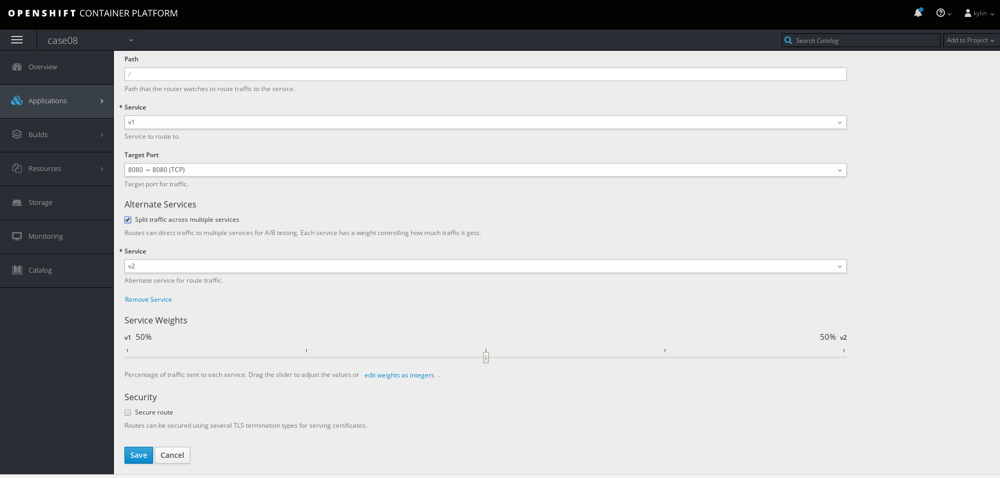
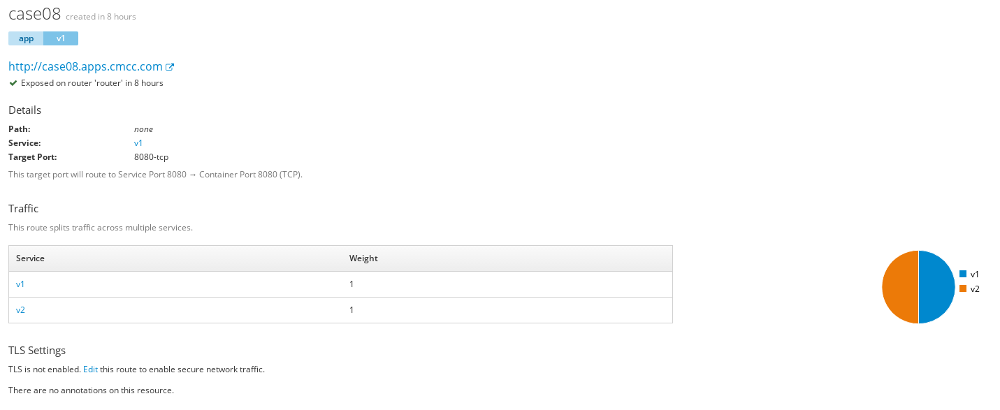
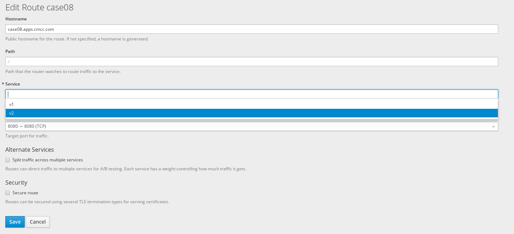

$ oc login https://master.example.com:8443 -u kylin -p redhat
$ oc new-project case01用例
Table of Contents
亲和性及反亲和性调度策略
| 条目 | 说明 |
|---|---|
目的 |
通过集群调度能力(亲和性及反亲和性调度策略)，验证可以根据策略把工作负载部署到目标服务器或者目标服务器中某些服务器上的能力。 |
步骤 |
|
预期结果 |
|
1 - 准备
2 - 对节点打label
# oc label node node1.example.com region=r1 --overwrite
# oc label node node2.example.com region=r2 --overwrite
# oc label node node3.example.com region=r3 --overwrite3 - 亲和性操作(dc-affinity.yaml)
$ oc create -f dc-affinity.yaml$ oc get pod -o wide
NAME READY STATUS RESTARTS AGE IP NODE
mysql-1-76p9c 1/1 Running 0 <invalid> 10.129.0.51 node1.example.com
mysql-1-czvv2 1/1 Running 0 <invalid> 10.129.0.49 node1.example.com
mysql-1-j72p8 1/1 Running 0 <invalid> 10.129.0.48 node1.example.com
mysql-1-zcmg7 1/1 Running 0 <invalid> 10.129.0.50 node1.example.com4 - 重新对节点打label
# oc label node node1.example.com region- --overwrite
# oc label node node2.example.com region- --overwrite
# oc label node node3.example.com region- --overwrite
# oc label node node1.example.com zone=z1 --overwrite
# oc label node node2.example.com zone=z1 --overwrite
# oc label node node3.example.com zone=z2 --overwrite5. 反亲合性操作(dc-antiaffinity.yaml)
$ oc create -f dc-antiaffinity.yaml$ oc get nodes --show-labels | grep zone=z1
node1.example.com Ready compute 5d v1.9.1+a0ce1bc657 beta.kubernetes.io/arch=amd64,beta.kubernetes.io/os=linux,kubernetes.io/hostname=node1.example.com,node-role.kubernetes.io/compute=true,zone=z1
node2.example.com Ready compute 5d v1.9.1+a0ce1bc657 beta.kubernetes.io/arch=amd64,beta.kubernetes.io/os=linux,kubernetes.io/hostname=node2.example.com,node-role.kubernetes.io/compute=true,zone=z1
$ oc get nodes --show-labels | grep zone=z2
node3.example.com Ready compute 5d v1.9.1+a0ce1bc657 beta.kubernetes.io/arch=amd64,beta.kubernetes.io/os=linux,kubernetes.io/hostname=node3.example.com,node-role.kubernetes.io/compute=true,zone=z2$ oc get pods -o wide
NAME READY STATUS RESTARTS AGE IP NODE
mysql-1-g9plg 1/1 Running 0 <invalid> 10.129.0.58 node1.example.com
mysql-1-hcfsn 1/1 Running 0 <invalid> 10.130.0.70 node2.example.com
mysql-1-n4dbj 1/1 Running 0 <invalid> 10.131.0.18 node3.example.com
mysql-1-vcwnv 1/1 Running 0 <invalid> 10.129.0.59 node1.example.com租户资源限额
| 条目 | 说明 |
|---|---|
目的 |
在多服务环境下，对不同租户进行相应的应用资源限额操作，验证通过调度平台限定服务所使用资源的数量或者比例的能力，包括 CPU 和内存 |
步骤 |
|
预期结果 |
|
1 - 准备
$ oc login https://master.example.com:8443 -u kylin -p redhat
$ oc new-project case022 - 创建资源配额(quota.yaml, limitrange.yaml)
$ oc create -f quota.yaml
$ oc create -f limitrange.yaml
$ oc get quota
$ oc get limitrange3 - 部署
$ oc new-app jboss-webserver31-tomcat8-openshift:1.2~https://github.com/OpenShiftDemos/os-sample-java-web.git --name case02
$ oc expose svc/case02 --name=case02 --hostname=case02.apps.example.com
4 - 修改资源配额后执行部署
$ oc edit quota compute-resources-time-bound
$ oc get events
LAST SEEN FIRST SEEN COUNT NAME KIND SUBOBJECT TYPE REASON SOURCE MESSAGE
<invalid> <invalid> 22 case02-1.155fed4440299240 ReplicationController Warning FailedCreate replication-controller (combined from similar events): Error creating: pods "case02-1-dd4bv" is forbidden: exceeded quota: compute-resources-time-bound, requested: limits.cpu=300m,limits.memory=200Mi, used: limits.cpu=0,limits.memory=0, limited: limits.cpu=200m,limits.memory=100Mi蓝绿部署，灰度发布
| 条目 | 说明 |
|---|---|
目的 |
验证灵活的发布策略(灰度、蓝绿一键发布)的能力。 |
步骤 |
|
预期结果 |
|
1 - 准备
$ oc login https://master.example.com:8443 -u kylin -p redhat
$ oc new-project case032 - 部署
$ oc new-app php:7.0~https://github.com/redhat-china/php-helloworld.git --env VERSION=v1 --name=v1
$ oc new-app php:7.0~https://github.com/redhat-china/php-helloworld.git --env VERSION=v2 --name=v2
$ oc expose svc/v1 --name=case03 --hostname=case03.apps.example.com3 - A/B 部署


# for i in `seq 1 6` ; do curl http://case03.apps.example.com ; done
Version is v2
Version is v1
Version is v2
Version is v1
Version is v2
Version is v14 - 蓝绿部署

# for i in `seq 1 6` ; do curl http://case03.apps.example.com ; done
Version is v2
Version is v2
Version is v2
Version is v2
Version is v2
Version is v2OVS 网络的多租户隔离
| 条目 | 说明 |
|---|---|
目的 |
利用open vswitch搭建多租户隔离以及网络策略能力 |
步骤 |
|
预期结果 |
|
1 - 准备
$ oc login https://master.example.com:8443 -u kylin -p redhat
$ oc new-project case04-a
$ oc new-project case04-b2 - 部署测试应用
$ oc new-app php:7.0~https://github.com/redhat-china/php-helloworld.git --env VERSION=case04-A-ONE --name=case04-a-one -n case04-a
$ oc new-app php:7.0~https://github.com/redhat-china/php-helloworld.git --env VERSION=case04-A-TWO --name=case04-a-two -n case04-a
$ oc new-app php:7.0~https://github.com/redhat-china/php-helloworld.git --env VERSION=case04-B --name=case04-b -n case04-b3 - 查看网络插件配置
$ oc get clusternetwork
NAME CLUSTER NETWORKS SERVICE NETWORK PLUGIN NAME
default 10.128.0.0/14:9 172.30.0.0/16 redhat/openshift-ovs-networkpolicy4 - 网络策略设置(allow-from-same.yaml, labels-with-port.yaml)
$ oc create -f allow-from-same.yaml -n case04-a
$ oc create -f labels-with-port.yaml -n case04-b
$ oc get networkpolicy -n case04-a
$ oc get networkpolicy -n case04-b5 - 租户 A 内的 2 个容器之间的网络互联互通
$ oc get pods -o wide | grep Running
case04-a-one-1-dw6rl 1/1 Running 0 <invalid> 10.130.0.82 node2.example.com
case04-a-two-1-tlwxg 1/1 Running 0 <invalid> 10.129.0.73 node1.example.com
$ oc describe pod case04-a-one-1-dw6rl | egrep 'IP|Node:'
Node: node2.example.com/10.66.208.204
IP: 10.130.0.82
$ oc describe pod case04-a-two-1-tlwxg | egrep 'IP|Node:'
Node: node1.example.com/10.66.208.203
IP: 10.129.0.73租户 A 内容器 1 访问容器 2
$ oc rsh case04-a-one-1-dw6rl
sh-4.2$ curl http://10.129.0.73:8080
Version is case04-A-TWO租户 A 内容器 2 访问容器 1
$ oc rsh case04-a-two-1-tlwxg
sh-4.2$ curl http://10.130.0.82:8080
Version is case04-A-ONE6 - 租户 B 内容器访问租户 A 内容器
$ oc get pod -o wide | grep Running
case04-b-1-ctc58 1/1 Running 0 2h 10.130.0.73 node2.example.com
$ oc rsh case04-b-1-ctc58
sh-4.2$ curl http://10.130.0.82:8080
curl: (7) Failed connect to 10.130.0.82:8080; Connection timed out
sh-4.2$ curl http://10.129.0.73:8080
curl: (7) Failed connect to 10.129.0.73:8080; Connection timed out7 - 特定标签的容器访问租户 B 内容器
$ oc get pods -o wide --all-namespaces --show-all=false | grep case04
case04-a case04-a-one-1-dw6rl 1/1 Running 0 <invalid> 10.130.0.82 node2.example.com
case04-a case04-a-two-1-tlwxg 1/1 Running 0 <invalid> 10.129.0.73 node1.example.com
case04-b case04-b-1-ctc58 1/1 Running 0 <invalid> 10.130.0.73 node2.example.com
$ oc label pod case04-b-1-ctc58 role=testsvc --overwrite -n case04-b
$ oc label pod case04-a-one-1-dw6rl role=testfrontend --overwrite -n case04-a
$ oc rsh case04-a-one-1-dw6rl
sh-4.2$ curl http://10.130.0.73:8080
Version is case04-B
$ oc rsh case04-a-two-1-tlwxg
sh-4.2$ curl http://10.130.0.73:8080
curl: (7) Failed connect to 10.130.0.73:8080; Connection timed out